CSS Vlaggen (Jaar 1)
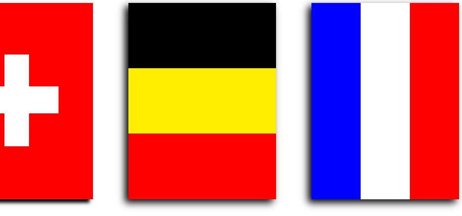In dit project moest ik M.B.V CSS 5 verschillende vlaggen maken. Zo heb de vlaggen van Nederland, België, Zwitserland, Japan en Rusland gemaakt. Dit was mijn eerste project met CSS en HTML, dus neem een kijkje!
naar siteCSS Pixelart (Jaar 1)
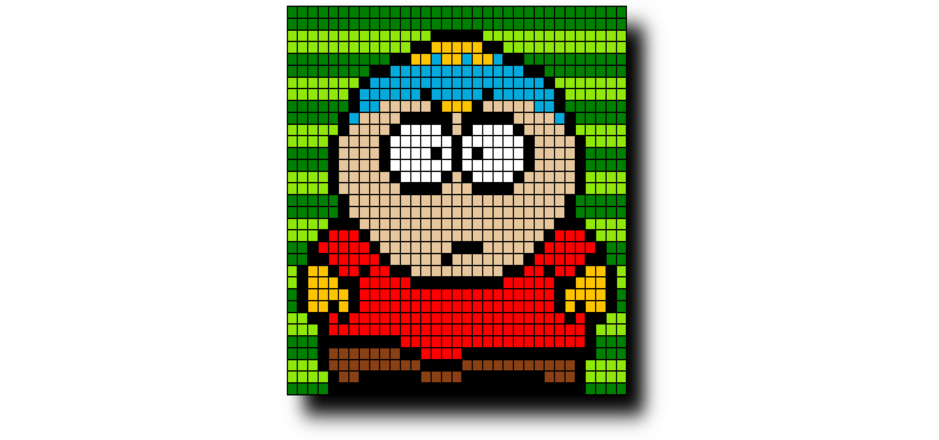In dit project moest ik een pixel art maken m.b.v CSS, zoals u ziet heb ik een 32x 32 pixel art van Cartman uit Southpark gemaakt. Een leuk project als je het mij vraagt!
naar siteNetwerkbegrippen (Jaar 1)
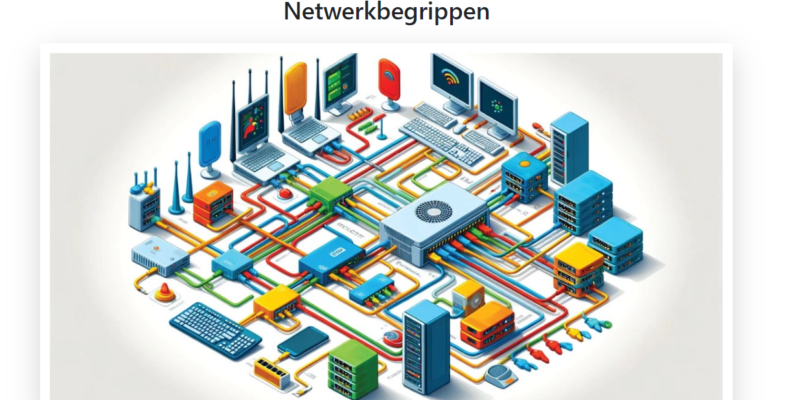In dit project moest ik een webpagina maken waarbij ik verschillende netwerkbegrippen uitleg aan de doelgroep, derde jaars. Een erg leerzame opdracht dus!
naar siteJS Piano (Jaar 1)
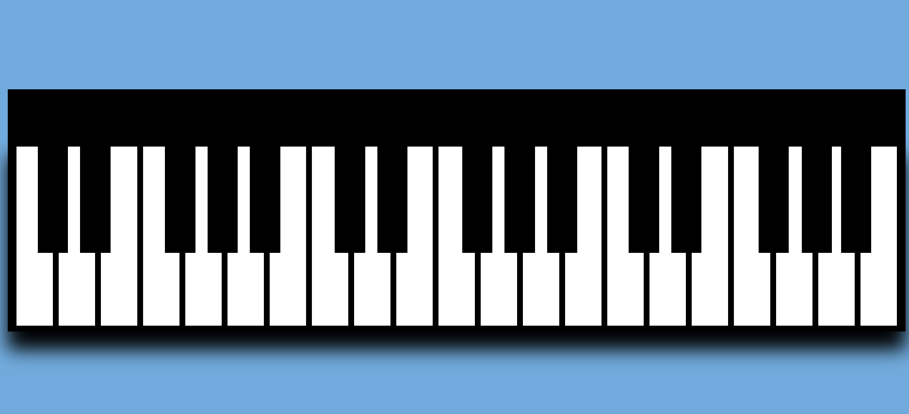In dit project moest ik een Javascript piano maken. Met CSS heb ik een mooi ontwerp gemaakt waarbij ik uiteindelijk piano geluidjes inzette met Javascript. Ik ben erg trots op dit resultaat en heb hiermee veel over Javascript geleerd.
naar siteJS Stoplichten (Jaar 1)

In dit project moest ik een paar CSS stoplichten maken die met behulp van Javascript van kleur verwisselen. Het is me gelukt en ben erg trots op het resultaat. Met deze opdracht heb ik veel geleerd over Javascript functions!
naar siteJS Gamecontroller (Jaar 1)
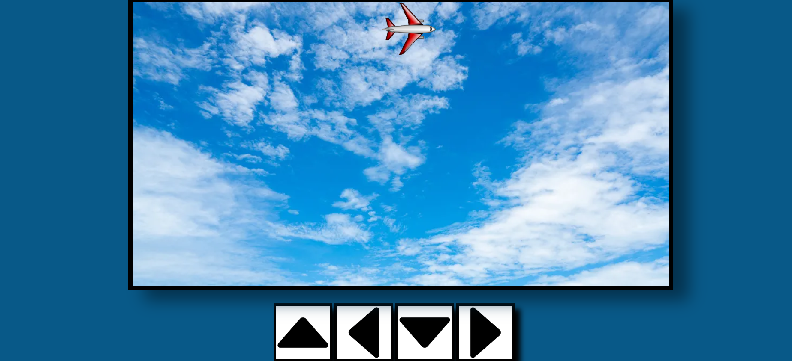In dit project moest ik een gamecontroller maken met behulp van Javascript en CSS. Zo kan het vliegtuigje zowel bewegen met de pijltjes op het scherm als de pijltjes toetsen op het toetsenbord.
naar siteJS Duckhunt (Jaar 1)
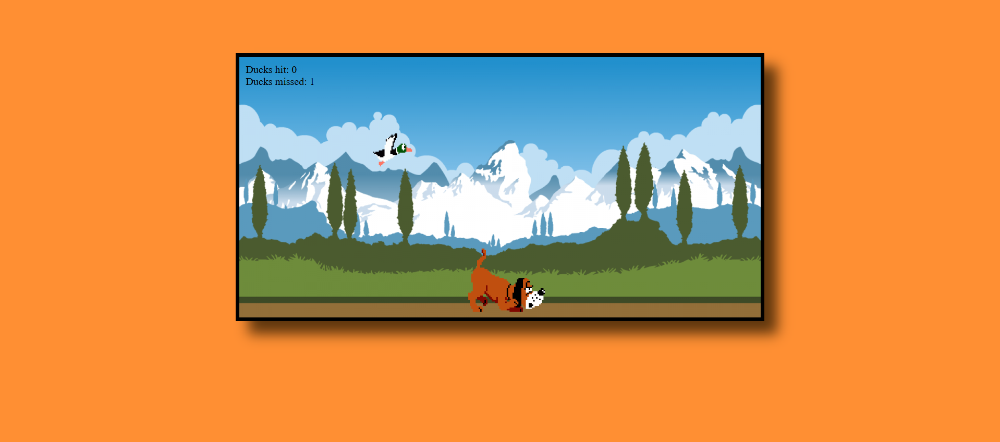In dit project moest ik Duck Hunt namaken met behulp van Javascript en CSS. Dit is mijn 2de Javascript game en ik ben erg trots op het resultaat! Neem een een kijkje en speel mijn versie van Duck Hunt!
naar siteBootstrap Site (Jaar 1)
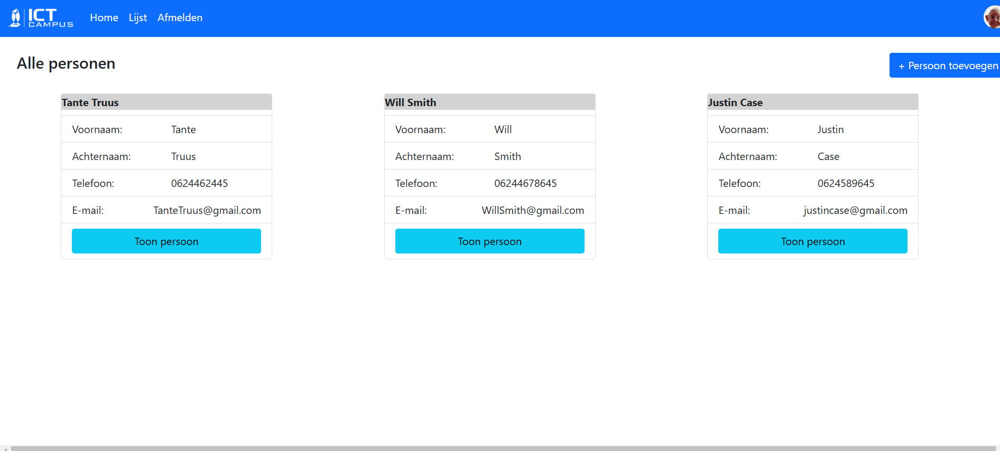In dit project moest ik met behulp van een voorbeeld de layout van een site nabootsen. Zoals u kunt zien heb ik hiervoor boostrap gebruikt. Hoewel de site niet functioneel is, ben ik toch trots op het resultaat.
naar sitePHP Blogsite (Jaar 1)
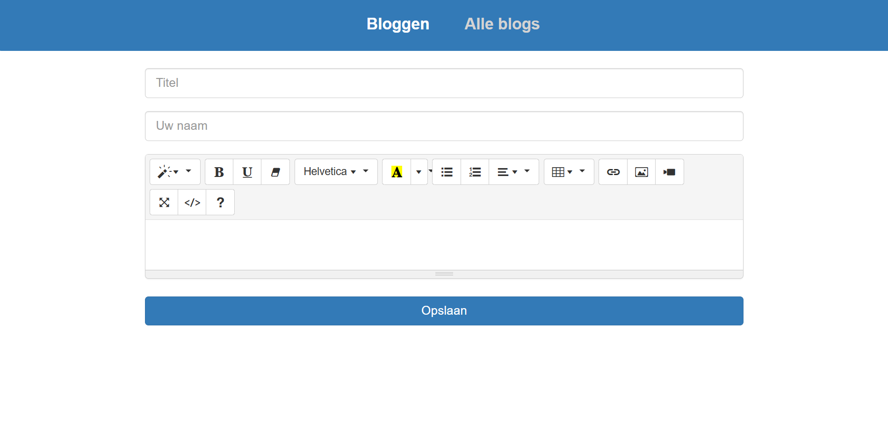In dit project was mijn opdracht om een blogsite te maken met PHP. Ik heb hiervoor een crud system moeten gebruiken om de blogtekst, id, titel en blogdatum op te slaan en weer te geven op de site. Ik vind de site er strak uitzien en ben erg tevreden met het resultaat.
naar siteJquery Paardenrace (Jaar 1)
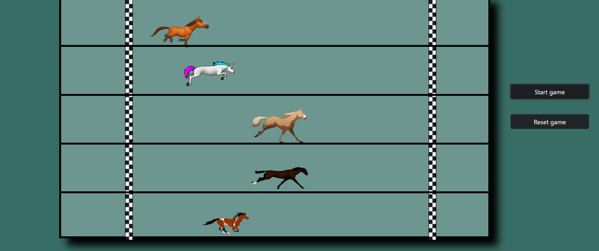Bij deze opdracht kreeg ik de taak een JQeury paardenrace site te maken. Met CSS en Jqeury (Javascript) is dit mij gelukt. Ik heb veel geleerd over de de werking en functies van Jqeury. Neem een kijkje!
naar sitePHP Game Collectie (Jaar 1)
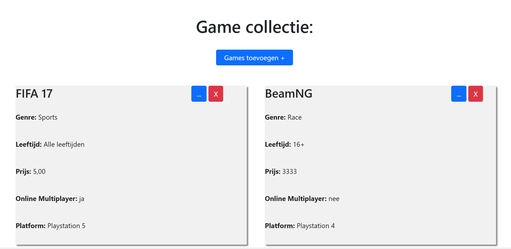In deze opdracht kreeg ik de taak een site te maken met PHP CRUD. De site dient als archief voor mijn games. Kortom, een PHP Game Collectiesite. Met dit project heb ik geleerd de Delete en Edit elementen van CRUD te gebruiken. Het is goed gelukt en ben dus erg blij met het resultaat!
naar siteUitgelijnde vormen galerij (Jaar 2)
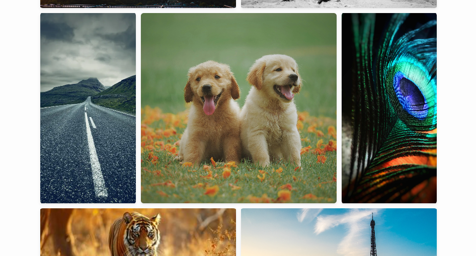Dit was mijn eerste opdracht op mijn stage. Ik heb met behulp van Javascript en CSS een galerij gemaakt die altijd mooi bijft meebewegen! Ongeacht welk plaatje je erbij doet, blijft hij de toegevoegde afbeelding een vierkante of rechthoekige vorm geven zodat de galerij ongelijk is, maar toch niet rommelig is. Neem een kijkje!
naar siteVisueel Ontwerp Bing (Jaar 2)
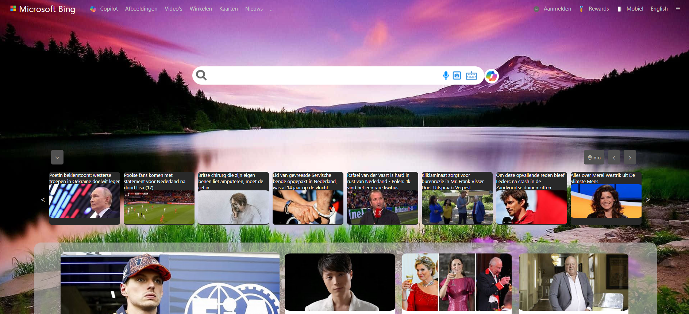Dit was de tweede opdracht die ik kreeg op mijn stage, om mijn CSS vaardigheden te bewijzen en te pushen. De opdracht was om Microsoft Bing na te maken. Hoewel niets dus functioneert ben ik erg trots op het bijna identieke resultaat!
naar siteAutomatische Foto Slideshow (Jaar 2)
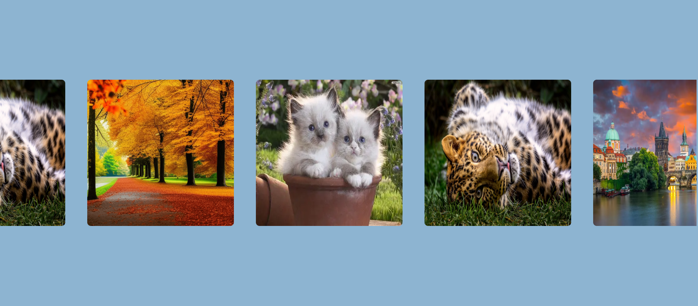In dit project moest ik van mijn stagebedrijf een automatische slideshow maken die altijd op een nette manier moet bewegen, ongeacht de hoeveelheid afbeeldingen. Het was een erg uitdagende opdracht, maar met behulp van Javascript is het mij gelukt! Ook kunt u de slideshow bewegen naar de gewenste kant. Neem gerust een kijkje!
naar siteJS Rekenmachine (Jaar 2)
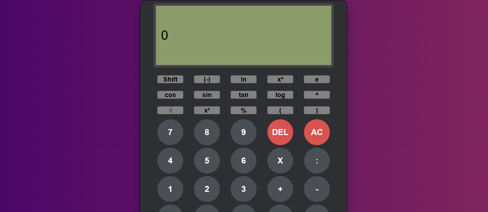In dit project heb ik met behulp van Javascript en CSS een rekenmachine gemaakt, gebaseerd op mij eigen CASIO rekenmachine. Het was een leuke opdracht om mijn kennis van Javascript op te frissen. Probeer hem uit!
naar siteBewegende Foto Galerij (Jaar 2)
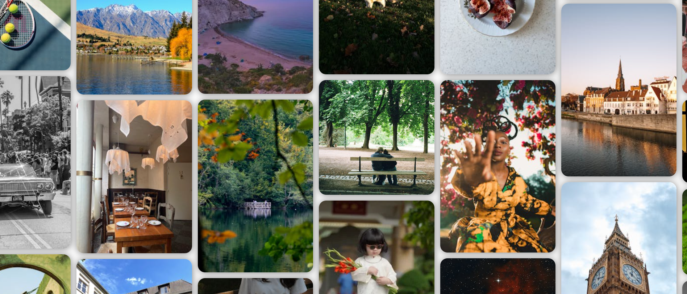In dit project moest ik een fotogalerij maken die van links naar rechts en van boven naar onder beweegt, wanneer hij een rand aanraakt moet hij de andere kant opgaan als een soort 90s DVD savescreen effect. Daanraast heb ik de laatste 300 foto's gebruikt van Pexels.com met hulp van hun API. Een erg uitdagende Javascript opdracht, maar ik ben trots op het resultaat!
naar siteJSON Search (Jaar 2)
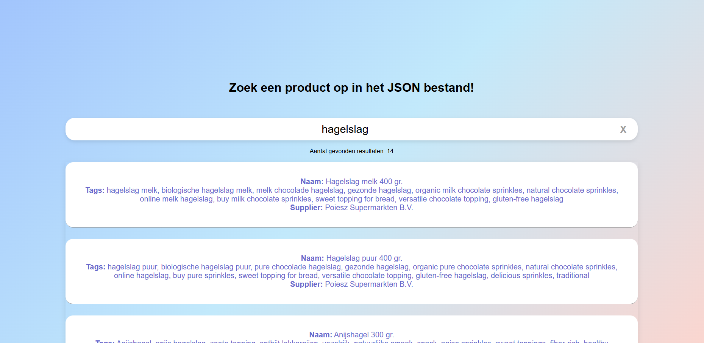In dit project heb ik met behulp van Javascript, CSS en een gigantisch Json bestand een search website gemaakt. Je kan zoeken op de titel van prodcuten, maar ook eventuele beschrijvingen, tags en suppliers. Ook met kleine typfoutjes blijft hij mooi doorwerken. Wederom een leuk en nuttig project voor het ontwikkelen van mijn Javascript kennis!
naar siteAPI Weersite (Jaar 2)
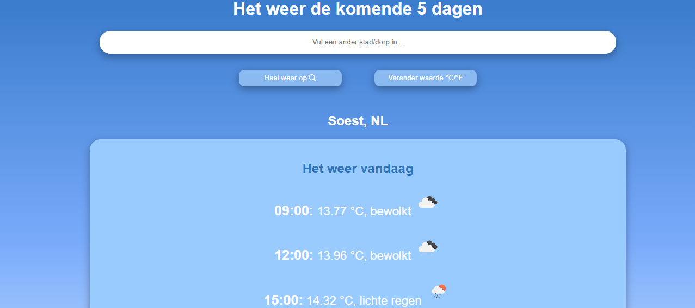In dit project moest ik een weerapplicatie maken met locatieherkenning. Zo moest ik een API gebruiken om het weer van nu en de komende week te fetchen. Hij werkt zowel op de locatie van de gebruiker als op ingevoerde locatie. Neem een kijkje en probeer het uit!
naar siteJS timersite (Jaar 2)

In dit project moest ik een timer maken met Javascript. Hij heeft meerdere functies, zo heeft hij geluidjes, een pauzeknop en een progressiebalk. Ik ben trots op het resultaat en vind hem er mooi uitzien, voel u vrijom het te bekijken!
naar siteJS Datepicker (Jaar 2)
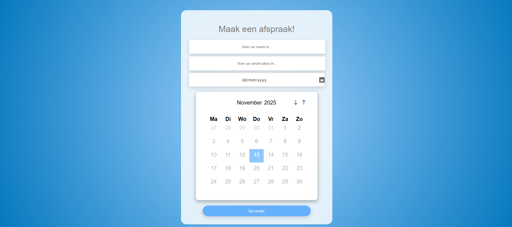In dit project moest ik een kalender maken. Daarbij heb ik een developer pagina en een user pagina gemaakt om te oefenen met de localStorage. In de developer pagina kan je datums aan/uitzetten voor de gebruiker. Ook kan je hier afspraken uitlezen indien die zijn aangemaakt. Ik ben er lang mee bezig geweest en trots dit te tonen! Neem een kijkje!
JS / PHP Sponsorplattegrond Generator (jaar 2)
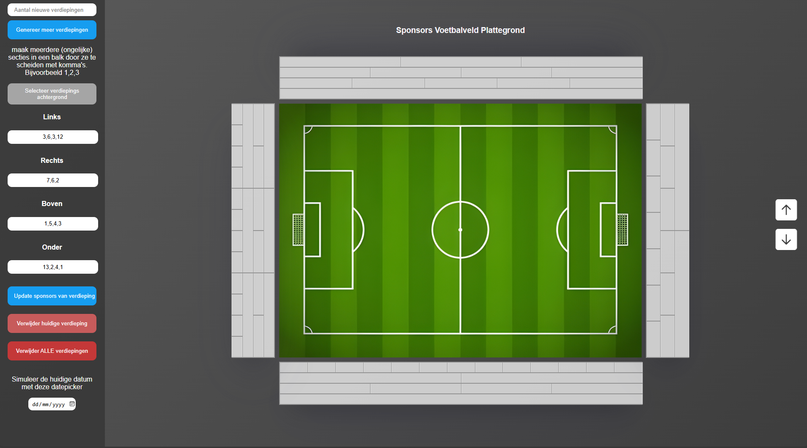In dit project kan je een stadionplattegrond met meerdere verdiepingen beheren. Per verdieping kunnen sponsors worden aangemaakt, aangepast en verwijderd. Sponsors hebben een naam, kleur en einddatum, waarbij verlopen sponsors automatisch rood worden gemarkeerd en alle gegevens centraal in een database worden opgeslagen.
naar site